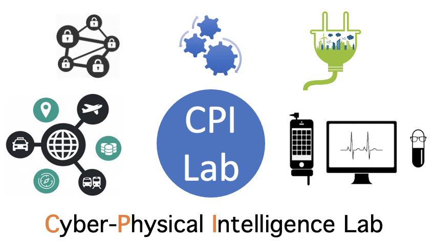

CPI won EU Horizon Grant of €5M as Consortium Director on
Trustworthy Edge AI
(score 14.5/15)
CPI won prestigious EU Marie Curie ITN Grant of €4M as PI on
Sustainable Edge AI
(score 98/100)
CPI won Postdoc Grant (2-year) on
Healthcare AI
CPI won
4TU Grant
on successful
Lorentz
, leading to the first
Dagstuhl
for the
Roadmap of Edge AI
CPI successfully host
ACM EdgeSys 2022
with Volker Hilt (Bell Labs Director), Rennes, France
CPI supported
ACM SIGCOMM 2022
as Publicity Co-Chair
CPI supported
ACM SIGCOMM 2021
as Virtual Experience Co-Chair and SRC Award Committee
CPI supported
ACM UbiComp 2021
as Finance Co-Chair
CPI supported
ACM CoNEXT 2021
as Publication Chair and TPC
CPI supported
ACM HotNets 2021
as Publicity Chair
CPI successfully host
ACM EdgeSys 2021
, Edinburgh, UK
CPI successfully host
FCN 2021
, Delft, NL
CPI sponsored
ACM EWSN 2021
, Delft, Netherlands
CPI won
Best Paper Award
at ACM SenSys CCIoT